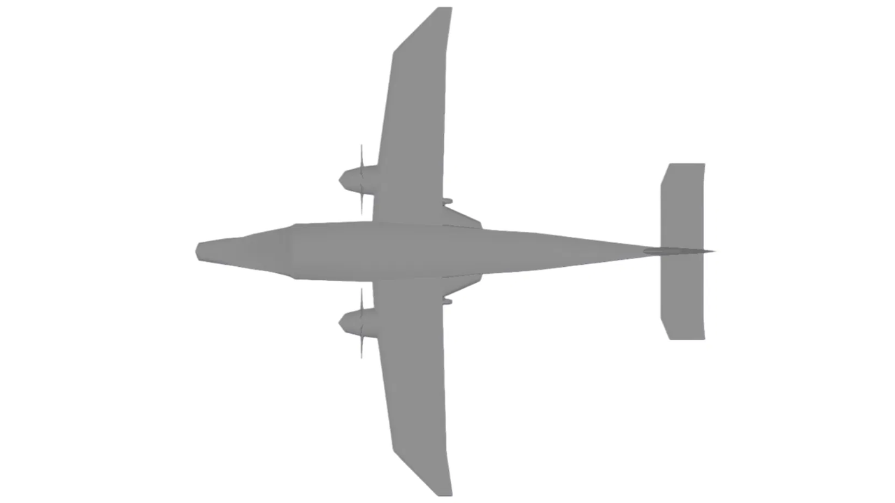

Sky Yak: 19-Seat STOL Aircraft
STRONG LIKE THE HIMALAYAN YAK

Overview
Sky Yak is a 19-passenger, twin-engine STOL transport that we designed for high-altitude, short-strip flying in the Himalayan region. The name comes from the yak, an animal that stays strong and steady where most others cannot. We took the aircraft from a written list of requirements through sizing, configuration, weight and balance, performance, stability and finally simulator flight testing.
At maximum takeoff weight it is 7,000 kg, with an empty weight of 3,600 kg, 1,200 kg of fuel and 2,200 kg of payload. Two 776 hp engines give it a range of 1,500 km and an endurance of 5.2 hours, cruising at 200 knots at 15,000 ft with a crew of two.
Why This Aircraft
Many mountain communities are far from any road that stays open all year, and the airstrips that serve them are short, rough and high up. An aircraft for that job has to take off and stop in a very short distance, carry a useful load in thin air and stay easy to fly when the weather turns bad. We wanted to see what a passenger aircraft would look like if it was designed for those conditions from the start, and to prove the design by flying it, even if only in a simulator.
Design Requirements
- Carry 19 passengers and 2 crew
- Take off within 1,200 ft and land within 1,500 ft on short, unprepared runways
- Service ceiling of 20,000 ft, cruising at 15,000 ft at 200 knots
- Stall speed within 87.47 knots
- Range of 1,500 km with 5.2 hours of endurance
- Be statically and dynamically stable, with good handling qualities
Sizing and Configuration
The sizing started with a matching plot of wing loading against power loading, where the stall, takeoff, landing, climb and cruise constraints are drawn on one chart and the design point is picked from the allowed region. That led to a high-wing layout with a span of 16.97 m, a projected wing area of 33.15 m² (about 211 kg/m² at maximum weight), a root chord of 2.43 m, a tip chord of 0.5 m, a mean aerodynamic chord of 2.07 m, an aspect ratio of 8.67, 3 degrees of dihedral and no incidence. The tail uses NACA 0012 sections: the horizontal stabilizer has a 6 m span at -1.5 degrees incidence, and the vertical stabilizer has a 3.4 m span with a taper ratio of 0.58. The control surfaces were sized as follows:
- Rudder: 35% chordwise and 100% spanwise
- Ailerons: 25% chordwise and 35% spanwise
- Elevators: 40% chordwise and 80% spanwise
- Flaps: 25% chordwise and 40% spanwise
The landing gear is a tricycle arrangement with steering on the front wheel and braking on the rear wheels. The aircraft was modeled in 3D to check the cabin and cockpit layout, ground clearance (2.6 m under the propellers) and overall dimensions.
Weight, Balance and Loads
We placed the CG within the range allowed by the fuel and payload cases and drew the CG diagram from empty weight up to maximum takeoff weight. The neutral point was found from elevator trim data measured at several CG positions and extrapolated, which gave the static margin. The flight and gust envelope (the V-n diagram) was drawn to set the design speeds and load limits.
Simulator Flight Testing
To test the design we built a custom model in Plane Maker and flew it in X-Plane. Each test was flown and recorded on its own: takeoff and landing distances, stall speeds at different altitudes, climb and descent characteristics (rate of climb, climb angle, minimum sink rate), and thrust matching along the mission profile. We also recorded the longitudinal modes (short period and phugoid) and the lateral modes (Dutch roll, roll damping and spiral) to see how the aircraft behaves after a disturbance. Handling qualities were checked with a roll attitude task and rated on the Cooper-Harper scale.
Results
- The aircraft got a Cooper-Harper rating of 4 in the simulator, which means acceptable handling with a manageable pilot workload, including in short takeoffs and landings on rugged airstrips at altitude
- It stayed controllable and stable within the tested pitch and roll ranges, though the pilot needs to apply moderate effort in demanding conditions such as gusty crosswinds or rough runways
- Static stability was confirmed in both the longitudinal and lateral axes
- Maximum rate of climb was about 7.2 m/s, and the takeoff, landing, stall, climb and descent results were compared against the requirements
- Our conclusion from the tests is that Sky Yak can do what it was designed to do: carry 19 passengers over 1,500 km with 5.2 hours of endurance and connect remote Himalayan regions
Difficulties
- Balancing short-field performance with cruise efficiency took several rounds of wing sizing
- Keeping a positive static margin inside the fuel and payload CG range needed repeated passes on the neutral point analysis
- Turning the analytical stability numbers into a Plane Maker model that also flies well by feel took some tuning
Technical Views
Project Poster
References
- D. P. Raymer, Aircraft Design: A Conceptual Approach, 6th ed. American Institute of Aeronautics and Astronautics, 2018.
- J. Roskam, Airplane Design, Parts I to VIII. DARcorporation, Lawrence, Kansas.
- S. Gudmundsson, General Aviation Aircraft Design: Applied Methods and Procedures, 2nd ed. Butterworth-Heinemann, 2022.
- R. C. Nelson, Flight Stability and Automatic Control, 2nd ed. McGraw-Hill, 1998.
- G. E. Cooper and R. P. Harper Jr., “The use of pilot rating in the evaluation of aircraft handling qualities,” NASA Technical Note D-5153, 1969.
- Federal Aviation Administration, 14 CFR Part 23, Airworthiness Standards: Normal Category Airplanes. ecfr.gov
- A. Deperrois, XFLR5: analysis of foils and wings operating at low Reynolds numbers. xflr5.com
- Laminar Research, X-Plane flight simulator and Plane Maker. x-plane.com